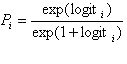
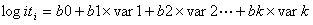

Following variable retention harvesting, the retention adjustment factor (VRAF) is affected by three components: 1) the withdrawal of retained tree areas from future timber production, 2) the competitive influence (ie. shading, etc.) of retained trees on the adjacent regenerating portions of the cutblock, and 3) the reduction of the retained trees due to windthrow. The third component is optional.
TIPSY VRAFs represent the reduction in post-harvest regenerated yields on a per-hectare basis over an entire VR cutblock as a function of the retained area(s) or trees removed from timber production. Windthrow losses will reduce the percentage of crown cover, the average group size or crown size, and the initial length of edge per hectare retained. This will decrease the VRAF and therefore increase both the available growing space and the expected yields for the regeneration. The computed VRAF at age 100 is displayed in TIPSY’s Stand Description, and the VRAF values at any given age are presented in the Custom Table output option. You can plot the adjustment factors from the Custom Table.
The form of the windthrow probability logistic model for a given location is:

Where Pi is the probability of damage in boundary segment (25m by 25m) ‘i’, and the logit values are given by:

Where var1 to var k are a series of independent variables described in Table 1. The mean values and parameter estimates for these variables are included in TIPSY and described in Lanquaye and Mitchell, 2005. You can also view them in Windthrow defaults and constraints.
Table 1. Summary of independent variables for stand-level models
Variable |
Description |
Units |
Bearing |
Bearing (cosine) at right angles to boundary inward towards block. The orientation of a clearcut edge relative to a southerly wind, cosine backstransformed. It takes a value of 0-180 with 0 being a perpendicular but northward facing boundary, 180 being a perpendicular but southward facing boundary. 90 is a parallel boundary (facing into block from either east of west side) etc. |
° |
Mean wind speed |
Mean wind speed from BC Hydro data (2001) |
m/s |
Directional exposure |
Number of segment exposed directions out of 8 cardinal directions |
# |
Topex 2000 |
Topographic exposure to distance: sum of maximum angle to ground within 2 km for each of eight cardinal directions |
° |
Elevation |
Ground elevation from 100 m DEM |
m |
Time since harvest |
Years since harvest of adjacent opening |
years |
Stand top height |
Stand top height from forest cover layer |
m |
Crown cover loss |
Mean proportion of crown cover loss within the segments at a given location |
% |
Area loss |
Mean proportion of area loss within the segments at a given location
|
% |
We expect windthrow losses to increase with:
• topographic exposure
• elevation
• mean wind speed
• site index and stand height
• slenderness, high height diameter (H/D) ratios
• time since harvest
• opening size and boundary exposure
• density and stand uniformity
• decreasing retention levels
• smaller retention groups and dispersed trees
• narrower rectangular retention strips
Users should be aware that, as with any predictive model, there are important modelling assumptions that affect the accuracy of projections and their interpretation. The windthrow models are empirical and, consequently, work best for situations very similar to those for which the model was fit. The windthrow models reflect the average outcome for stand edges or trees with particular sets of attributes. They incorporate damage that occurs within 10 years of harvesting and therefore reflect endemic windthrow from routinely occurring peak winds rather than catastrophic windthrow. Harvesting strategies are evolving and the stand-level windthrow models are based primarily on clearcut systems. Additional tree and stand-level datasets are needed to fully develop and test models suitable for the full range of VR scenarios. Windthrow predictions should be used for evaluating potential outcomes and evaluating trade-offs with the recognition that actual local windthrow may vary substantially from the prediction.
The operational version of TASS used to generate the TIPSY database assumes that the sun is always directly overhead and that shorter trees will not survive within the vertical canopy shadow of taller trees. TIPSY VRAFs remove the crown area of retained trees after windthrow. Users who consider this effect too extreme may wish to reduce the crown area accordingly for dispersed retention in particular.
The windthrow model works only with certain combinations of variable retention inputs. For example, you can't use windthrow with the formula method of edge length determination and a crown area that is partly aggregated and partly dispersed. TIPSY will alert you to these limitations. BatchTIPSY produces an error message in its .err file.